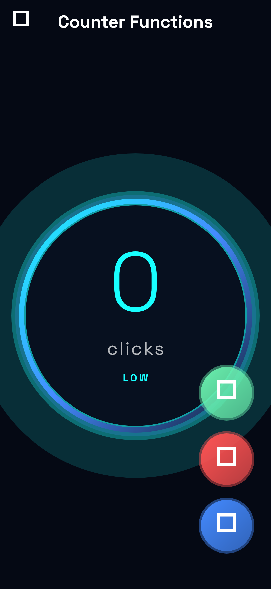
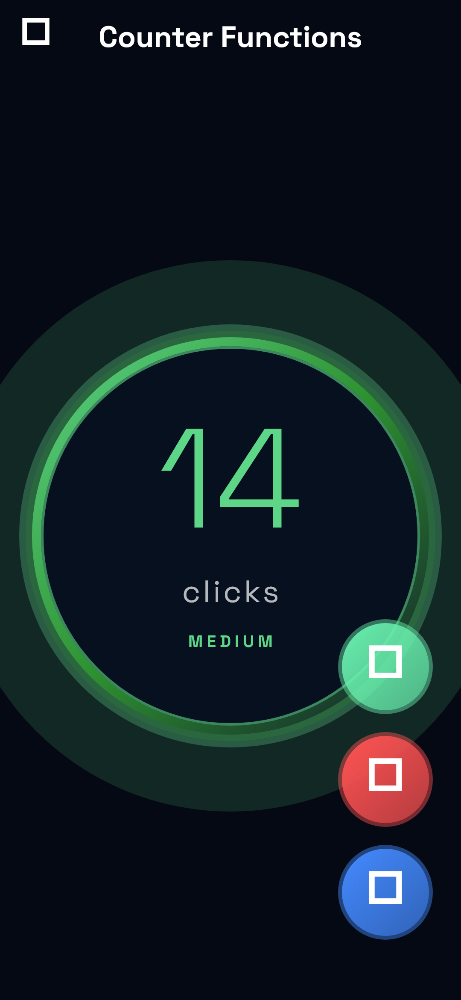
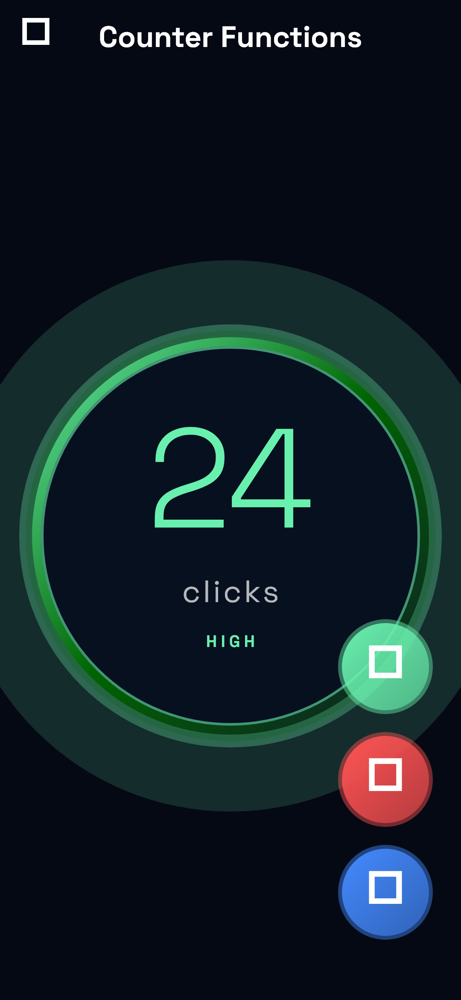
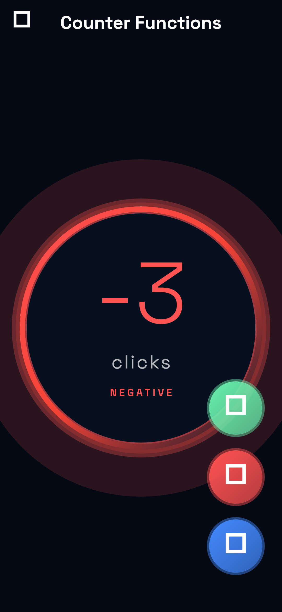
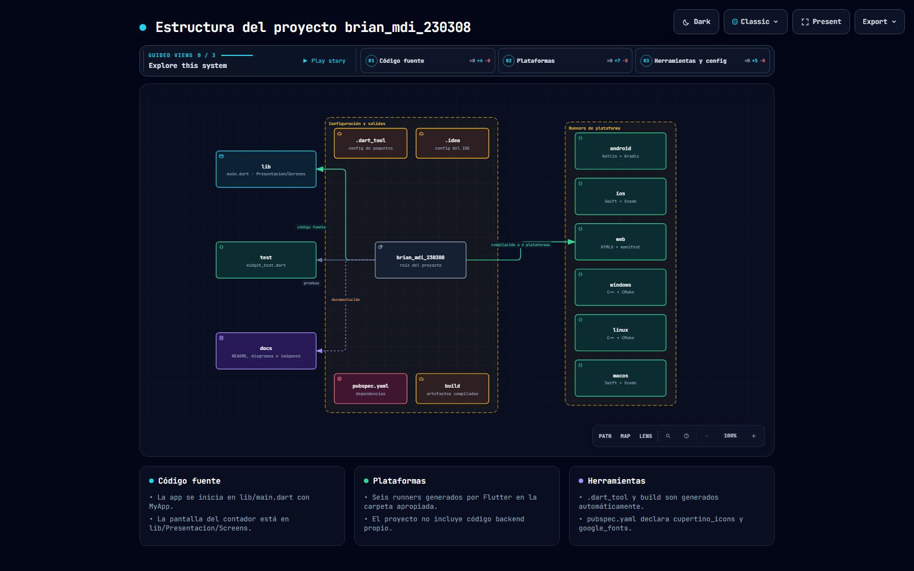
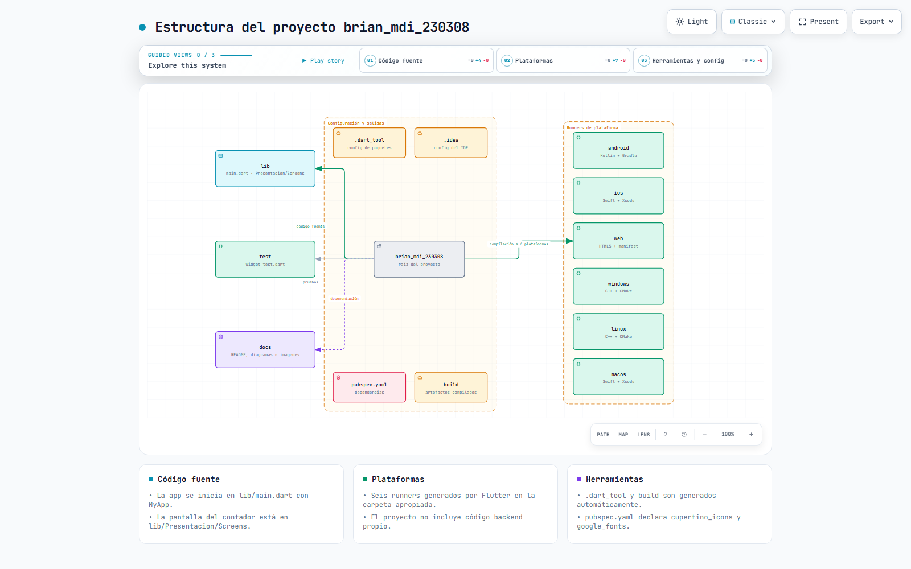
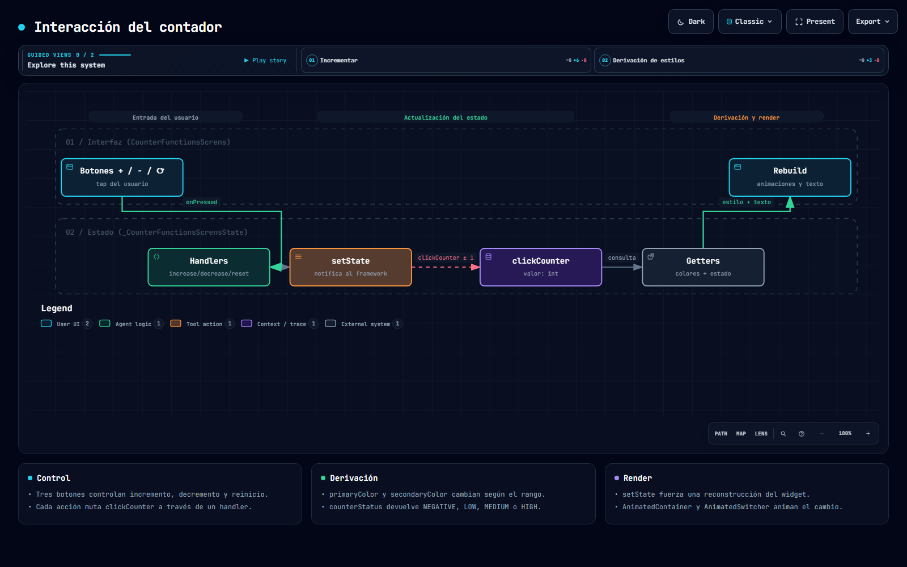
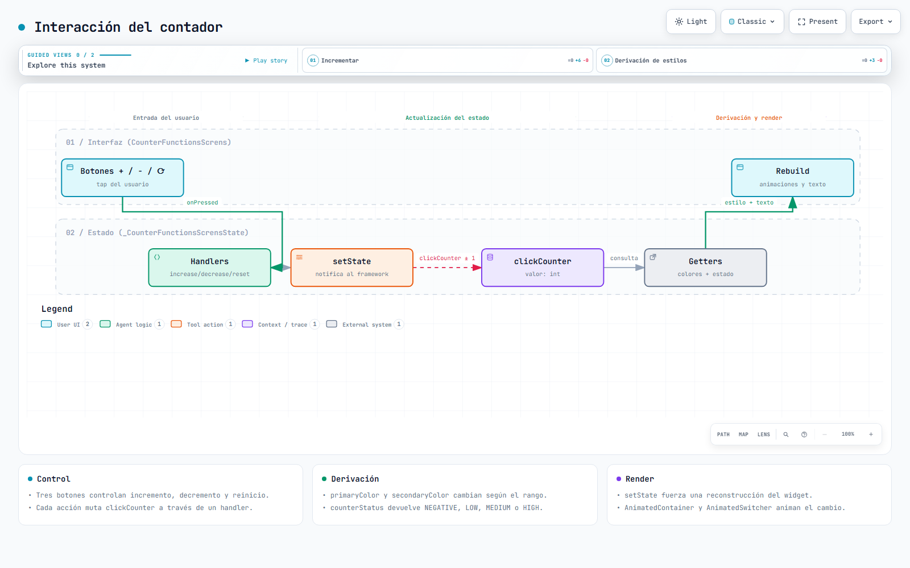
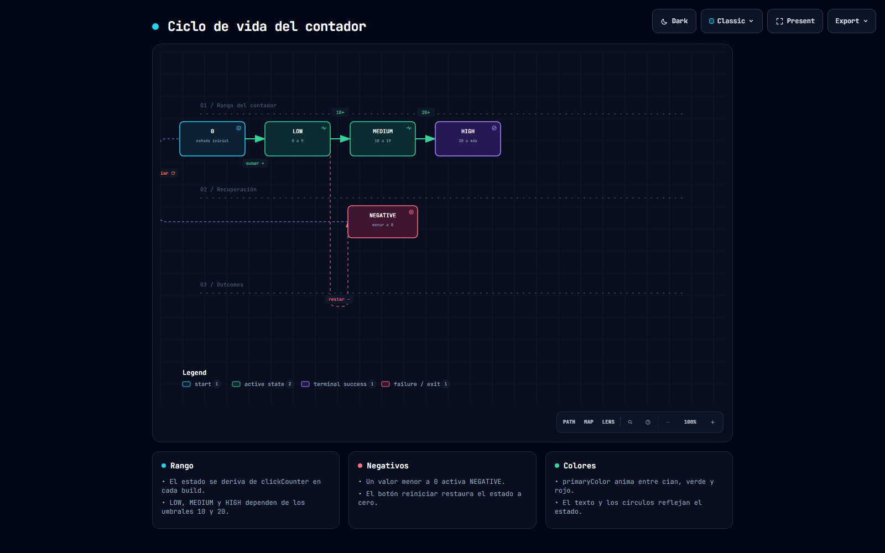
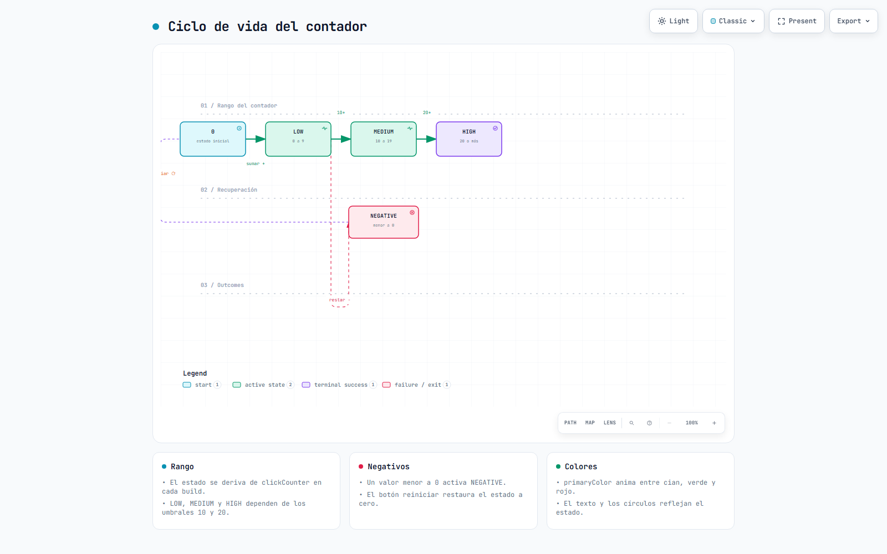

brian_mdi_230308
Aplicación Flutter (Material 3) con un contador interactivo y estados visuales. Documentación completa, diagramas interactivos e imágenes de referencia.
Ver la documentación completa (README)
Arquitectura de la aplicación
Estructura del proyecto
Interacción del contador
Ciclo de vida de estados
Capturas de la aplicación
Renderizadas desde la pantalla real, una por estado del contador.




Diagramas








Las imágenes se regeneran con tool/capturas/generar.ps1 y node tool/diagramas/exportar.mjs.